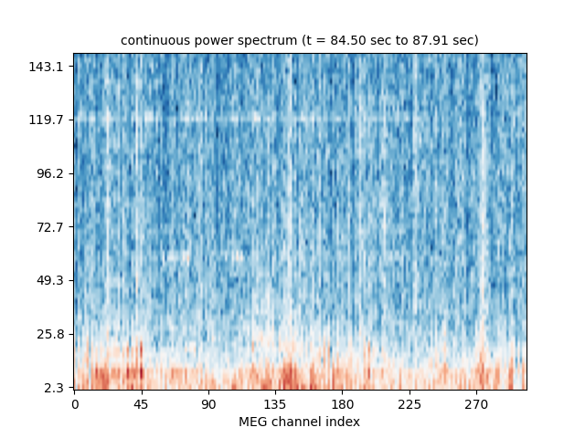

Note
Go to the end to download the full example code
Compute real-time power spectrum density with FieldTrip client#
Please refer to ftclient_rt_average.py for instructions on how to get the FieldTrip connector working in MNE-Python.
This example demonstrates how to use it for continuous computation of power spectra in real-time using the get_data_as_epoch function.
 Read a total of 3 projection items:
PCA-v1 (1 x 102) idle
PCA-v2 (1 x 102) idle
PCA-v3 (1 x 102) idle
Running subprocess: neuromag2ft --file /home/circleci/mne_data/MNE-sample-data/MEG/sample/sample_audvis_raw.fif --speed 10
FieldTripClient: Waiting for server to start
Exception ignored in: <socket.socket fd=14, family=AddressFamily.AF_INET, type=SocketKind.SOCK_STREAM, proto=0, laddr=('0.0.0.0', 54432)>
Traceback (most recent call last):
File "/home/circleci/project/mne_realtime/externals/FieldTrip.py", line 227, in connect
self.sock = socket.socket(socket.AF_INET, socket.SOCK_STREAM)
ResourceWarning: unclosed <socket.socket fd=14, family=AddressFamily.AF_INET, type=SocketKind.SOCK_STREAM, proto=0, laddr=('0.0.0.0', 54432)>
FieldTripClient: Connected
FieldTripClient: Retrieving header
FieldTripClient: Header retrieved
Not setting metadata
1 matching events found
No baseline correction applied
0 projection items activated
Effective window size : 0.426 (s)
Not setting metadata
1 matching events found
No baseline correction applied
0 projection items activated
Effective window size : 0.426 (s)
Not setting metadata
1 matching events found
No baseline correction applied
0 projection items activated
Effective window size : 0.426 (s)
Not setting metadata
1 matching events found
No baseline correction applied
0 projection items activated
Effective window size : 0.426 (s)
Not setting metadata
1 matching events found
No baseline correction applied
0 projection items activated
Effective window size : 0.426 (s)
# Author: Mainak Jas <mainak@neuro.hut.fi>
#
# License: BSD (3-clause)
import os.path as op
import subprocess
import time
import numpy as np
import matplotlib.pyplot as plt
import mne
from mne.utils import running_subprocess
from mne_realtime import FieldTripClient
print(__doc__)
# user should provide info and list of bad channels because
# FieldTrip header object does not provide them
data_path = mne.datasets.sample.data_path()
info = mne.io.read_info(op.join(data_path, 'MEG', 'sample',
'sample_audvis_raw.fif'))
bads = ['MEG 2443', 'EEG 053']
fig, ax = plt.subplots(1)
speedup = 10
command = ["neuromag2ft", "--file",
"{}/MEG/sample/sample_audvis_raw.fif".format(data_path),
"--speed", str(speedup)]
with running_subprocess(command, after='kill',
stdout=subprocess.PIPE, stderr=subprocess.PIPE):
with FieldTripClient(host='localhost', port=1972,
tmax=10, wait_max=5, info=info) as rt_client:
# select gradiometers
picks = mne.pick_types(info, meg='grad', eeg=False, eog=True,
stim=False, include=[], exclude=bads)
n_fft = 256 # the FFT size. Ideally a power of 2
n_samples = 2048 # time window on which to compute FFT
# make sure at least one epoch is available
time.sleep(n_samples / info['sfreq'])
for ii in range(5):
epoch = rt_client.get_data_as_epoch(n_samples=n_samples,
picks=picks)
spectrum = epoch.compute_psd(method='welch', fmin=2, fmax=200, n_fft=n_fft)
psd, freqs = spectrum.get_data(return_freqs=True)
cmap = 'RdBu_r'
freq_mask = freqs < 150
freqs = freqs[freq_mask]
log_psd = 10 * np.log10(psd[0])
tmin = epoch.events[0][0] / info['sfreq']
tmax = (epoch.events[0][0] + n_samples) / info['sfreq']
if ii == 0:
im = ax.imshow(log_psd[:, freq_mask].T, aspect='auto',
origin='lower', cmap=cmap)
ax.set_yticks(np.arange(0, len(freqs), 10))
ax.set_yticklabels(freqs[::10].round(1))
ax.set_xlabel('Frequency (Hz)')
ax.set_xticks(np.arange(0, len(picks), 30))
ax.set_xticklabels(picks[::30])
ax.set_xlabel('MEG channel index')
im.set_clim()
else:
im.set_data(log_psd[:, freq_mask].T)
plt.title('continuous power spectrum (t = %0.2f sec to %0.2f sec)'
% (tmin, tmax), fontsize=10)
plt.pause(0.5 / speedup)
Total running time of the script: ( 0 minutes 13.355 seconds)
Estimated memory usage: 19 MB